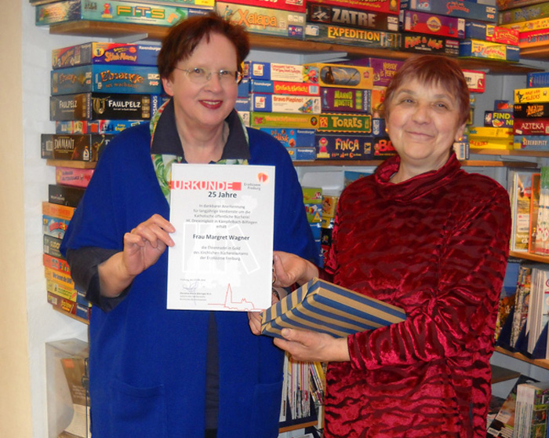
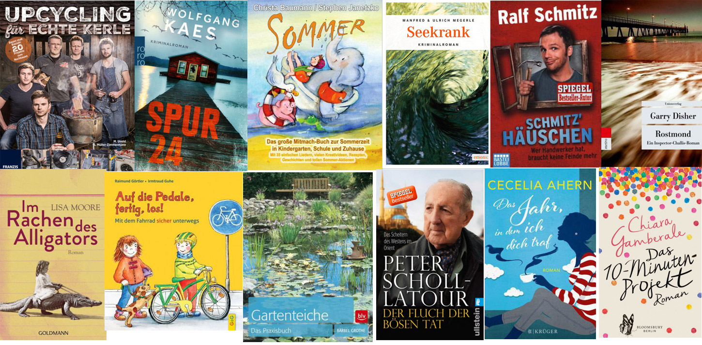

18 Jahre Bücherflohmarkt Bücherei Bilfingen, davon 10 Jahre in der Kämpfelbachhalle Bilfingen
Unser Termin! ...immer 1 Woche nach Ende der Sommerschulferien im September.
Nie wurde dieser Flohmarkttermin in Frage gestellt.
In all den Jahren wurden Kinder eingeschult – obwohl wir zeitgleich in der Kämpfelbachhalle waren.
Dieser Termin wurde uns einfach weggenommen – ohne Diskussion!
Die Grundschule Kämpfelbach beansprucht jetzt für die Einschulungsfeierlichkeiten
auch die Kämpfelbachhalle (Einschulungsfeierlichkeiten abwechselnd in Ersingen bzw. Bilfingen).
Hier verdrängt man eine ehrenamtlich geführte Bücherei, welche für die Bevölkerung der Gemeinde
und darüber hinaus, mit hohem Engagement überdurchschnittliches leistet – auch in Zusammenarbeit
mit dem Bilfinger Kindergarten und der Grundschule in Bilfingen. Sie ist auch für Schüler anderer Schulen
immer eine beliebte Anlaufstelle, wenn es um Lektüre für Referate geht.
Um das umfangreiche Angebot der Bücherei Bilfingen bieten zu können wird viel Geld benötigt,
welches wir vom Träger und den Zuschuss-Gebern im erforderlichen Umfang nicht erhalten!
Die Bücherei Bilfingen erwirtschaftet seit Jahren ca. 70 % der benötigten Finanzmittel selbst.
Beim Bücherflohmarkt verkaufen wir gespendete gebrauchte Bücher.
Der Bücherflohmarkt ist dabei eine Haupteinnahmequelle der Bücherei.
Der Verkaufserlös kommt in vollem Umfang der Büchereiarbeit zugute.
Das heißt: Wir kaufen dafür überwiegend Bücher, Spiele, Hörbücher und andere Medien.
Außerdem bietet die Bücherei Bilfingen seit 2014 die Möglichkeit, eBooks, eAudio (Hörbücher) und ePaper
über Internet (Onleihe) auszuleihen – auch dieses eMedien-Angebot finanzieren wir mit diesen Eigenmitteln.
Ob und wie wir den Bücherflohmarkt an anderen Terminen durchführen können, bleibt offen.
“So“ wird ehrenamtliches Engagement belohnt ! ...wir sind unendlich enttäuscht.Bei uns aktuell: „Alles für die Katz“
25jähiges Jubiläum von Frau Margarete Skalitzky-Wagner
Frau Margarete Skalitzky-Wagner ist im Jahr 1991 zu uns gestoßen und unterstützt uns seither bei der Büchereiarbeit tatkräftig.
Die Büchereileiterin Edeltraud Wessinger überreichte im Namen der Fachstelle für Büchereiwesen der Erzdiözese Freiburg eine Urkunde,
sowie die Ehrennadel in Gold, sowie von der Bücherei ein Buchgeschenk.
Vielen Dank für die vielen Jahre vertrauensvoller Mitarbeit.
Im August/September 2016 neu eingestellt...
Wir haben in den letzten 2 Monaten 356 neue Medien eingekauft und eingestellt:
Romane, Jugendbücher, Kinderbücher, Sachbücher, Comic.
Auch sind in der Onleihe www.libell-e.de in diesem Zeitraum wieder rund 410 neue Medien dazu gekommen.
Insgesamt können Sie inzwischen unter 6.065 eMedien auswählen und kostenlos herunterladen.
Hier eine kleine Auswahl an neu eingestellter Bücher:

Kommen Sie vorbei - es lohnt sich!